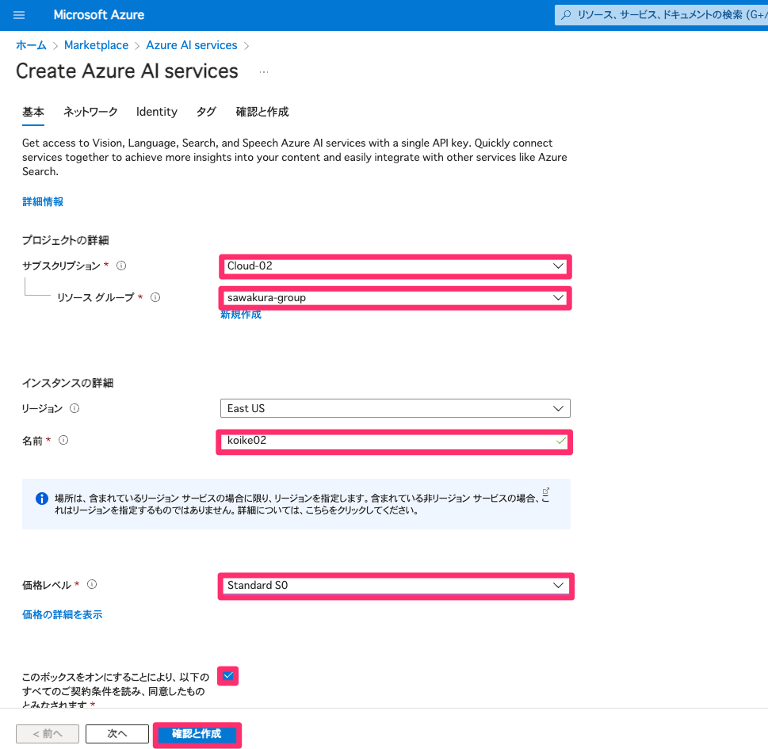

1-1【演習】画像分類モデルの作成
本章では Custom Vision を用いて画像分類モデルの作成を行います。
Custom Visionについて
Microsoft Custom Visionは、独自の画像分類モデルを簡単に構築し、デプロイするためのサービスです。 ビジョンAIを使用して、画像を異なるカテゴリに分類するカスタムモデルを作成します。 ### Custom Visionの利点 ユーザーフレンドリー: 直感的なユーザーインターフェースを備えており、初心者でも使いやすいです。 自動学習: ラベリングされた画像データを使用して、自動的に学習とモデルの改善を行います。 クラウドベース: クラウド上でモデルを作成し、簡単にデプロイすることができます。
手順
Azure へログイン
Web ブラウザを開き、Azure ポータルにアクセスします。サインインを選択し、 ユーザー名とパスワードを入力して、アカウントにサインインします。
サインインができると下記のようなAzure のホーム画面に遷移します。
Azure AI マルチアカウントのリソースを作成
Azure のホーム画面の左上にある「リソースの作成」ボタンをクリックします。
検索バーに「Azure AI」と入力し、候補から「Azure AI Service」を選択します。
「Azure AI Vision」の作成画面で、必要な情報を入力します

サブスクリプション: Cloud01~20 のどれかが選択出来るようになっています。
リソース グループ: sawakura-group
リージョン: EastUS
リソース名: 名字+本日の日付+ai (重複などがあった場合はランダムな名前で構いません)
価格レベル: Standard S0
チェックボックスに☑マークを入れる
設定が完了したら、「確認と作成」をクリックし、リソースを作成します。
下記のようにリソースの作成が完了しました。と出力差れればリソースの作成は完了です。
CustomVision で画像分類modelを作成する
- Custom Visionポータルにアクセスします。[サインイン] を選択します。 Azure portal へのサインインに使用したのと同じアカウントでサインインします。

新しいプロジェクトを作成します。プロジェクト名や説明を追加します。
Name: demo+名前+pro
Resource: 先ほど作成した Azure AI のリソースの名前
ProjectTypes: Classification その他、デフォルトの設定
最後に CreateProject を選択し、プロジェクトの作成を行います。
次に画像分類の モデル を作成するための 「画像の追加(add images)」をクリックし、サンプルデータをアップロードします。
アップロードした画像をラベル別にタグ付けします。
「トレーニング」をクリックしてモデルをトレーニングします。トレーニングの進行状況を確認します。
トレーニングが完了したら、テスト画像を使用してモデルのパフォーマンスを評価します。
モデルの精度が満足いく場合は、「デプロイ」をクリックしてモデルをデプロイします。
デプロイされたモデルにアクセスするためのエンドポイントURLやAPIキーが提供されます。 こちらを使用することによって、アプリケーションから作成した AI を使用することが可能になります。
まとめ
Microsoft Custom Visionを使用すると、独自の画像分類モデルを簡単に作成し、デプロイすることができます。 手順は直感的であり、初心者でも迅速にモデルを構築することができます。